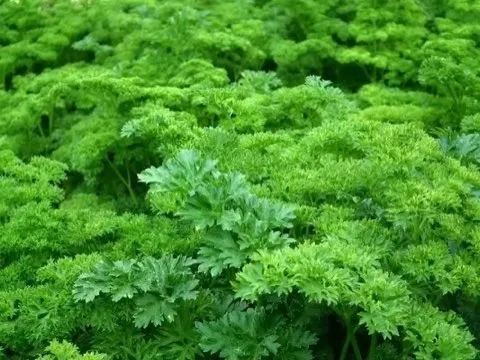

Persil Plat
Notre persil plat est reconnu pour son arôme intense et sa fraîcheur exceptionnelle. Incontournable dans la cuisine, il relève toutes vos recettes — salades, sauces, poissons, viandes et plats mijotés.
Cultivé selon les principes de l’agriculture biologique, il est récolté à la main chaque jour pour garantir une qualité optimale. Riche en vitamines et minéraux, il apporte couleur et saveur à tous vos plats.
Caractéristiques
- Certifié Agriculture Biologique
- Récolté frais chaque matin
- Arôme puissant et naturel
- Feuilles vertes et tendres
- Idéal pour sauces, assaisonnements et décorations
- Culture locale sans pesticide
Prix :
1,20€ / bouquet